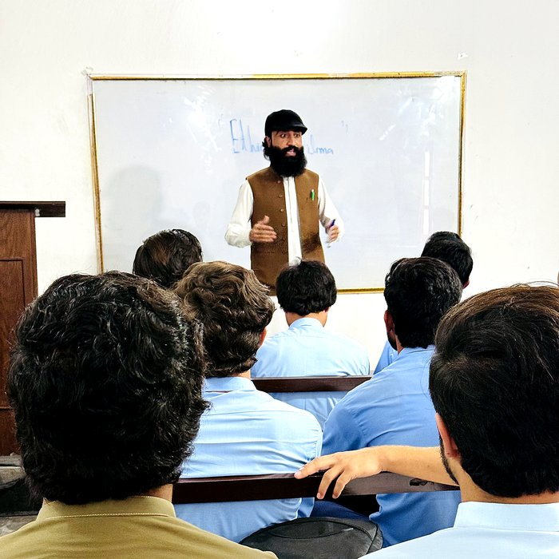
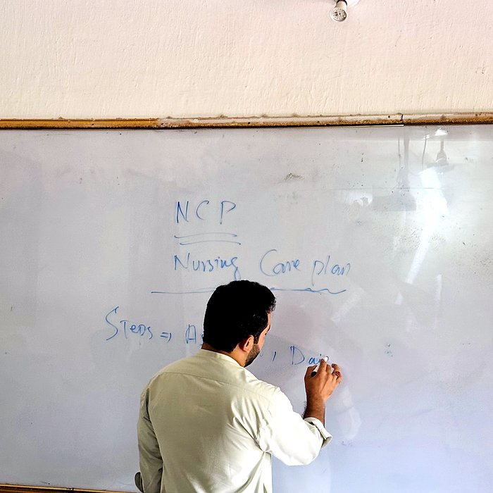

Meet the Team
Our Faculty & Staff
Experienced educators and clinicians committed to mentoring the next generation of nurses.

Allama Iqbal
Managing Director (MD)Provides institutional leadership and long-term direction for the college.
Muhammad Ali
PrincipalLeads academic direction, administration and institutional quality standards.
🧾
Yasir Khan
AccountantManages fee collection, finances and accounts for the college.

Classroom Instruction
Structured lectures covering theory alongside real clinical scenarios.

Interactive Learning
Faculty use interactive teaching methods to reinforce core concepts.
Seminars & Guest Sessions
Regular seminars keep students engaged with visiting speakers and topics.